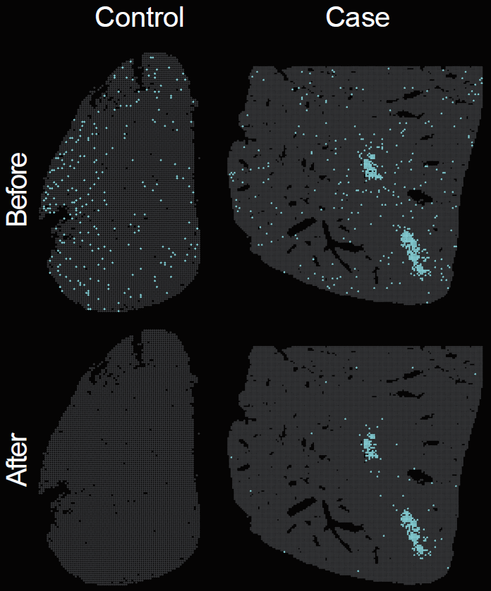
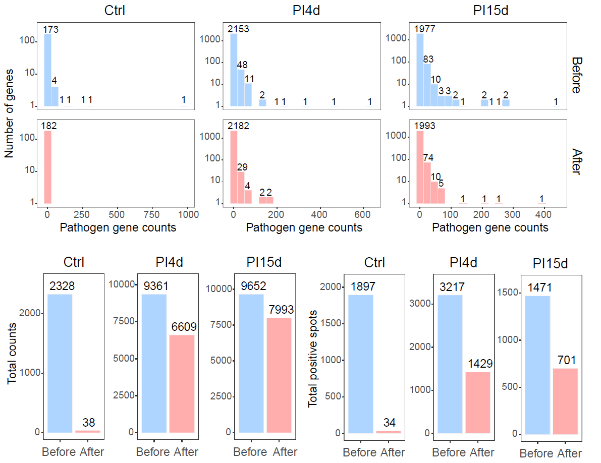
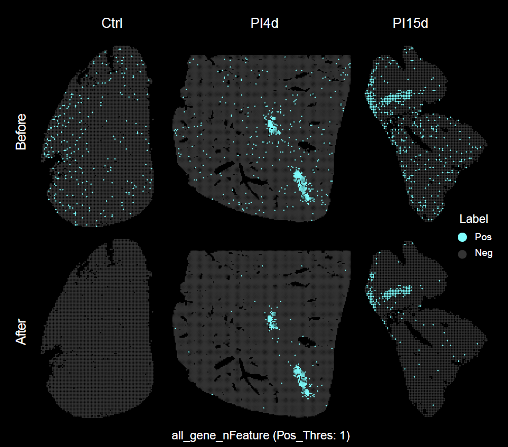

Pathogen background correction
Source:vignettes/03_Pathogen_background_correction.Rmd
03_Pathogen_background_correction.RmdOverview
This vignette describes how to perform pathogen background correction
for spatial transcriptomic data of infectious diseases using
STID.
Accurate detection of pathogen-derived background signals requires
explicit modeling of background contamination. In STID,
background correction uses reference background or control samples to
estimate the distribution of pathogen-associated features and reduce
spurious signals before downstream spatial transcriptomic analysis of
infectious diseases.
This vignette covers:
- preparing a processed
STIDobject and a pathogen feature list; - selecting control samples or spatial background regions for background modeling;
- running
CorrectBackground(); - summarizing pathogen-derived background signal before and after correction;
- generating spatial distribution maps of pathogen-derived background signals.

Spatial distribution of pathogen-derived background signal before and after background correction.
Note: Update the
STIDobject name, pathogen feature list, background sample IDs, assay name, layer name, pathogen gene prefix, group names, and output directory according to the dataset used in your analysis.
Reference code: For more runnable code examples, please refer to the article code.
Example data
This vignette uses the processed AE STID_obj object and a pathogen feature list that have already been generated in the preprocessing step. Background can be estimated from control samples or, when needed, from spatially defined background regions.
Note: Replace
STID_obj,pathogen_genes, andDPI_0_1with the object name, pathogen feature vector, and background or control sample IDs used in your dataset.
STID_obj_before <- STID_obj
# Update this vector to match the background or control samples in your dataset.
background_sample_ids <- c("DPI_0_1")
# Update this object if your pathogen feature list uses a different name.
background_features <- pathogen_genesBackground correction
To reduce background noise from pathogen-associated genes, background
signal can be estimated from control samples, predefined background
regions, or interactively selected background regions.
CorrectBackground() uses ctrl_samp_id for
control samples, bg_region_cell for predefined regions, and
bg_region_lasso = TRUE for interactive lasso selection.
When both control samples and background regions are supplied, the
larger correction value is used.
For control-sample correction, UMI adjustment is enabled by default
(adjust_UMI = TRUE) to account for sequencing-depth
differences. Corrected values below zero are set to zero.
options("parallel_workers" = 4)
STID_obj_after <- CorrectBackground(
STID_obj = STID_obj_before,
ctrl_samp_id = background_sample_ids,
bg_features = background_features,
PosThres_prob = 0.95,
# Optional region-based background definition:
# group_by = "nCount_Spatial",
# bg_region_cell = NULL,
# bg_region_lasso = TRUE,
assay_id = "Spatial",
layer_id = "counts",
grp_nm = "Final_CE_0.95",
dir_nm = "M1_CorrectBackground"
)The choice of PosThres_prob determines the balance
between sensitivity and specificity. It should be calibrated according
to sequencing depth, background signal level, and expected pathogen
load.
The following figure summarizes pathogen-derived background signal after background correction.

Summary of pathogen-derived background signal after background correction.
Spatial distribution of pathogen-derived background signal
This section generates exploratory spatial maps of pathogen-derived background signal before and after background correction. Formal detection of infection-associated positive spots is described in the Infection associated spot detection vignette.
Note: Update the pathogen gene prefix in
pattern, the pathogen feature vector, metadata key, assay name, layer name, and output group names according to your dataset.
Calculate the overall expression of pathogen genes and add the results to meta.data.
high_exp_genes <- GetTopGenes(
STID_obj_before,
top_n = 10,
pattern = "EmuJ-",
grp_by_samp = FALSE,
grp_by_celltype = FALSE,
assay_id = "Spatial",
layer_id = "counts"
)
# before correction
raw_pathogen_signal_before <- GetGeneStat(
STID_obj = STID_obj_before,
features = pathogen_genes,
prefix = "all_gene",
func = "sum"
)
STID_obj_before <- AddMetaColumn(
STID_obj = STID_obj_before,
add_data = raw_pathogen_signal_before,
meta_key = "raw",
ignore_rownm = FALSE
)
# after correction
raw_pathogen_signal_after <- GetGeneStat(
STID_obj = STID_obj_after,
features = pathogen_genes,
prefix = "all_gene",
func = "sum"
)
STID_obj_after <- AddMetaColumn(
STID_obj = STID_obj_after,
add_data = raw_pathogen_signal_after,
meta_key = "raw",
ignore_rownm = FALSE
)Using identical parameters, calculate the spatial distribution of pathogen-infected positive spots in the STID object before and after pathogen background correction.
# before correction
pathogen_signal_columns_before <- grep(
"all_gene",
colnames(STID_obj_before@meta.data),
value = TRUE
)
STID_obj_before <- SpotDetect_Gene(
STID_obj_before,
features = high_exp_genes,
feature_colnm = pathogen_signal_columns_before,
PosThres_prob = 0,
PosThres_count = 2,
col = c("grey20", "#80FFFF"),
black_bg = TRUE,
pt_size = 1,
blur_method = NULL,
blur_n = 1,
blur_sigma = 0.5,
plot_method = "single",
grp_nm = "CE_correct_before_all_gene_black"
)
# after correction
pathogen_signal_columns_after <- grep(
"all_gene",
colnames(STID_obj_after@meta.data),
value = TRUE
)
STID_obj_after <- SpotDetect_Gene(
STID_obj_after,
features = high_exp_genes,
feature_colnm = pathogen_signal_columns_after,
PosThres_prob = 0,
PosThres_count = 2,
col = c("grey20", "#80FFFF"),
black_bg = TRUE,
pt_size = 1,
blur_method = NULL,
blur_n = 1,
blur_sigma = 0.5,
plot_method = "single",
grp_nm = "CE_correct_after_all_gene_black"
)The following figure shows the spatial distribution of pathogen-derived background signal before and after background correction.

Spatial distribution of pathogen-derived background signal before and after background correction.
Notes
- Apply pathogen background correction before downstream infection-associated spatial transcriptomic analysis.
- Confirm that control samples or selected spatial background regions represent true baseline conditions before running correction.
- Use
ctrl_samp_idfor control samples; usebg_region_cellorbg_region_lasso = TRUEwhen the background must be defined spatially. - The corrected STID object preserves the original object structure while updating pathogen gene expression.
- Recalibrate
PosThres_probwhen applying this workflow to datasets with different sequencing depth, pathogen burden, or background contamination levels.
Next steps
This vignette generated a background-corrected STID
object and reduced nonspecific pathogen-derived signals in control or
background samples. In the next vignette, we will use the corrected
expression matrix to identify pathogen-infected spots and
host-responsive spots based on gene expression or gene set scores.
Session information
sessionInfo()
#> R version 4.2.0 (2022-04-22 ucrt)
#> Platform: x86_64-w64-mingw32/x64 (64-bit)
#> Running under: Windows 10 x64 (build 22000)
#>
#> Matrix products: default
#>
#> locale:
#> [1] LC_COLLATE=Chinese (Simplified)_China.utf8
#> [2] LC_CTYPE=Chinese (Simplified)_China.utf8
#> [3] LC_MONETARY=Chinese (Simplified)_China.utf8
#> [4] LC_NUMERIC=C
#> [5] LC_TIME=Chinese (Simplified)_China.utf8
#>
#> attached base packages:
#> [1] stats graphics grDevices utils datasets methods base
#>
#> loaded via a namespace (and not attached):
#> [1] digest_0.6.35 R6_2.6.1 jsonlite_1.8.8 lifecycle_1.0.5
#> [5] evaluate_1.0.1 cachem_1.1.0 rlang_1.1.7 cli_3.6.5
#> [9] rstudioapi_0.15.0 fs_1.6.3 jquerylib_0.1.4 bslib_0.8.0
#> [13] ragg_1.3.0 rmarkdown_2.29 pkgdown_2.2.0 textshaping_0.3.6
#> [17] desc_1.4.3 tools_4.2.0 htmlwidgets_1.6.4 yaml_2.3.10
#> [21] xfun_0.49 fastmap_1.2.0 compiler_4.2.0 systemfonts_1.0.4
#> [25] htmltools_0.5.8.1 knitr_1.49 sass_0.4.9